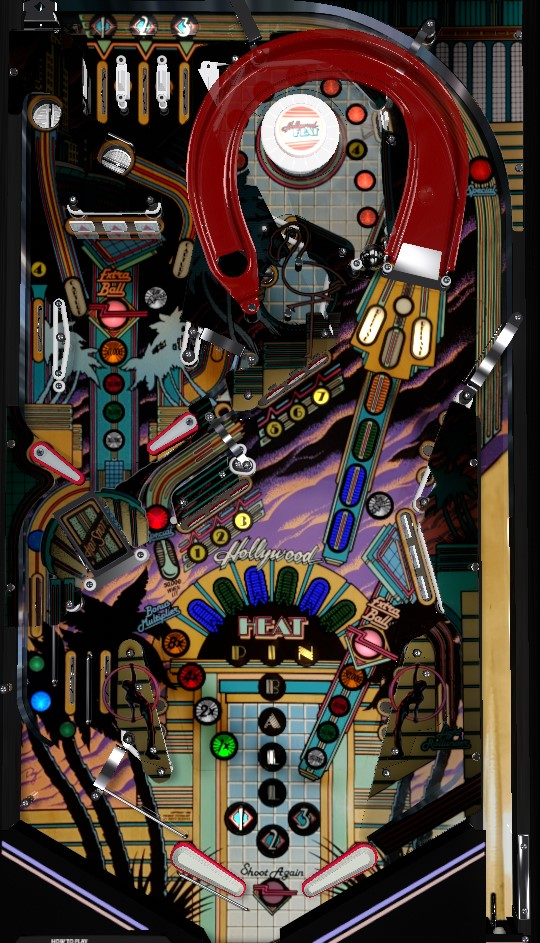

Complete 1-2-3 top lanes to advance the bonus multiplier, then play multiball by locking 2 balls at the Capture lanes on the mini-playfield and shooting the right ramp to release them. The end-of-game Multi-Bonus increases by 1,500 points times bonus multiplier per switch hit during multiball, and is usually the most significant component of scoring. If extra balls are set to points, clear both banks of drop targets to increase their completion values: after 4 completions of each bank, one of them will be lit for extra ball worth 500,000 points.
A short plunge comes down the right orbit to the flipper area. A full plunge goes to the top lanes for a chance to work toward bonus multiplier. There is no reason to short plunge, ever. Always plunge to the top lanes. There's no skill shot, but it's much safer and more valuable to go to the top lanes.
There are 3 top lanes, numbered 1-2-3. There are also a separate set of targets that are numbered 1-2-3-4-5-6-7: 1-2-3 and 5-6-7 are two separate banks of standup targets, and the 4 is collected at either the side lane of the upper playfield and the standup target within the captive ball chamber. In either set, make a lit lane or standup target to score 10,000 points and unlight it; unlit lanes and targets score 1,000 points. Completing either the 1-2-3 top lanes or the 1-2-3-4-5-6-7 targets resets that sequence only and increases the bonus multiplier by 1x, up to a maximum of 15x.
Lane change can be used with the right flipper only to rotate the positions of the lit 1-2-3 top lanes. The 1-2-3 lanes also spot letters in the word Pinball: game settings determine whether any lit 1-2-3 top lanes awards a Pinball letter or if you need to complete the 1-2-3 top lanes to spot a Pinball letter instead.
Locks are always available at the flashing lanes labelled Capture on either side of the mini-playfield. If a Capture light is solidly lit, that means there is already a ball locked in that lane. To access the mini-playfield, shoot the right ramp, the right orbit, or make a full shot to the Hot Shot mini-ramp in the lower left. When 2 balls are locked, shoot the right ramp to release them and start multiball. Locks can be stolen in a multiplayer game with no compensation given.
Whenever there is more than 1 ball in play, any switch on the playfield increases the Multi-Bonus by a value equal to 1,500 points times the current bonus multiplier. Each player builds their own Multi-Bonus, and you can continue to build Multi-Bonus by playing multiball more than once in a single game. Multi-Bonus is only awarded at the end of the final ball of the game. Multi-Bonus's scoring is very significant, and can be worth well over 1,000,000 points. Play multiball as frequently as you can, and take care not to tilt your 3rd ball.
There are 2 banks of drop targets: one in the mini-playfield, and one in the lower right of the main playfield. Each target down in either bank scores 3,000 points. One or more banks of drop targets will have a flashing value. Complete a drop target bank to score the flashing, or highest lit, value in front of the bank. Completing both banks to solidly light them increases the value of a bank completion in the sequence 10,000 - 15,000 - 30,000 - 50,000. After completing both flashing banks at a value of 50,000 points, one of the two banks will be lit for Extra Ball, alternating each time a slingshot is scored. If extra balls are on, you can only collect the extra ball once per ball in play, and all drop target completions for the rest of the ball score 50,000 points. If extra balls are off, earning one will score 500,000 points, and you can collect multiple extra balls per turn- scoring an extra ball resets both banks to a flashing 50,000 points, so completing them both one more time relights another 500,000-point extra ball.
Drop target completion values can be set to carry over from ball to ball. However, if extra balls are on, collecting an extra ball by any means resets the drop target values for your next turn.
In multiball, completing either drop target bank increases the completion value for both banks, without the need to complete both banks once to increase the values instead.
Any shot to the right ramp scores 50,000 points and a Pinball letter (if the ramp is not lit to release the locked balls to start multiball). Letters in Pinball can also be spotted by either making a lit 1-2-3 top lane or completing a set of 1-2-3 top lanes, depending on game settings.
Spelling Pinball lights the rollunder lane behind the 1-2-3 standup targets and the right orbit alternately for a Special, alternating on every slingshot hit. Special can score a free game, an extra ball, or 500,000 points. Spelling Pinball also instantly scores 70,000 points times the current bonus multiplier, acting as a pseudo-bonus collect since Pinball letters also score 10,000 points times bonus multiplier each as part of every end of ball bonus.
Just to the left of the right ramp is a captive ball that can be whacked backwards into the Heat Bumper chamber. The Heat Bumper value is a component of every end of ball bonus that is not affected by bonus multiplier. The first hit to the Heat Bumper adds 300 points to the Heat Bumper bonus; subsequent hits to the Heat Bumper each add 300 more points into the bonus than the previous hit did. If the Heat Bumper itself is not hit for about 1 second, the added value of the next Heat Bumper hit is reverted to 300 points. Heat Bumper bonus is not generally worth going for- an entire balls' Heat Bumper bonus is usually less than the 50,000 points you get from just shooting the nearby ramp directly instead.
The Heat Bumper chamber also has a standup target that awards the number 4 in the 1-7 sequence.
On the left, there are 3 lanes. The farthest left bottom lane scores 1,000 points and directs the ball toward the flippers; this serves as the exit from the mini-playfield. The middle left bottom lane is an out lane that scores 10,000 points. The near left bottom lane is an in lane that scores 3,000 points. Balls going down the middle and near left bottom lanes are not certain to fall straight down; lucky or unlucky bounces or nudging can cause an out lane ball to deflect to the right through a one way gate and to the flipper, while the near lane can deflect off the gate into the out lane.
On the right, there is no out lane, only an in lane; it scores 3,000 points and lights the rollunder lane that goes behind the 1-2-3 standup targets for 50,000 points for 4 seconds.
Bonus multiplier is advanced by any completion of the 1-2-3 top lanes or the 1-2-3-4-5-6-7 target sequence. Bonus multiplier always carries from ball to ball and maxes at 15x.
There are 3 flavors of base bonus: